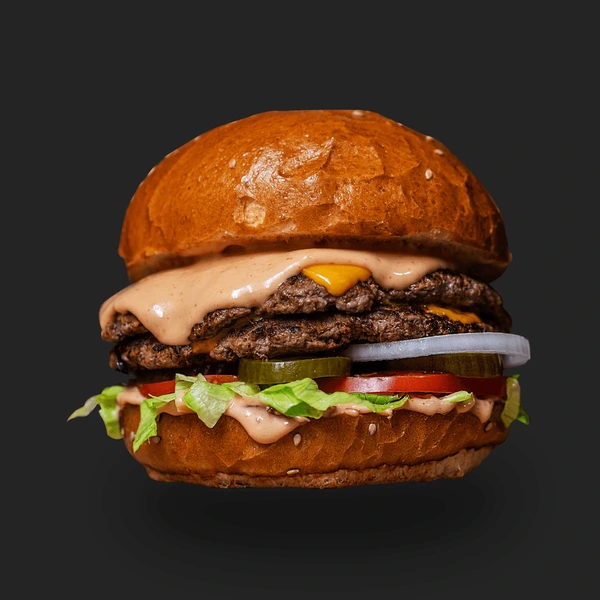

Making a Burger at Home
Recipe For Making Buger
Ingredients:
For the Burger Patties:
- 1 pound ground beef (80% lean, 20% fat for juiciness)
- Salt and pepper to taste
For the Burger Assembly:
- Burger buns
- Cheese slices (optional)
- Lettuce leaves
- Tomato slices
- Onion slices
- Pickles
- Ketchup, mustard, mayonnaise (optional)
Instructions:
Burger Patties:
- Prepare the Ground Beef:
- In a mixing bowl, gently combine the ground beef with salt and pepper. Avoid overmixing, as it can make the burgers dense.
- Shape the Patties:
- Divide the seasoned ground beef into equal portions and shape them into burger patties. Make them slightly larger than the diameter of your burger buns, as they will shrink during cooking.
- Create an Indentation:
- Press your thumb into the center of each patty to create a slight indentation. This helps prevent the burgers from puffing up in the middle during cooking.
- Season Again (Optional):
- Sprinkle a little extra salt and pepper on the outside of each patty for additional seasoning.
- Cook the Patties:
- Cook the patties on a grill, stovetop, or in the oven until they reach your desired level of doneness. For medium burgers, this typically takes about 3-4 minutes per side on a hot grill or pan.
- Add Cheese (Optional):
- If you want cheeseburgers, add a slice of cheese to each patty during the last minute of cooking. Cover the patties with a lid to help the cheese melt.
Burger Assembly:
- Prepare the Buns:
- Toast the burger buns lightly on the grill or in a toaster until they're golden brown.
- Build the Burger:
- Place a lettuce leaf on the bottom half of each bun. Add the cooked patty with or without cheese. Top with tomato slices, onion rings, and pickles.
- Add Condiments (Optional):
- Spread ketchup, mustard, mayonnaise, or your favorite condiments on the top half of the bun.
- Assemble and Serve:
- Place the top bun over the toppings to complete the burger. Secure with a toothpick if needed. Repeat for additional burgers.
- Serve Immediately:
- Burgers are best enjoyed right away while they're hot and the cheese is melty.
Finished Dish

Home Page | Next Page